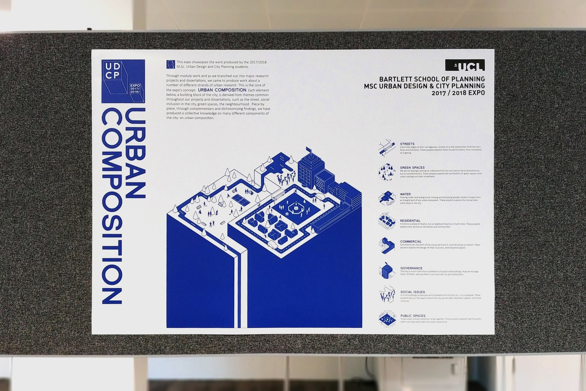
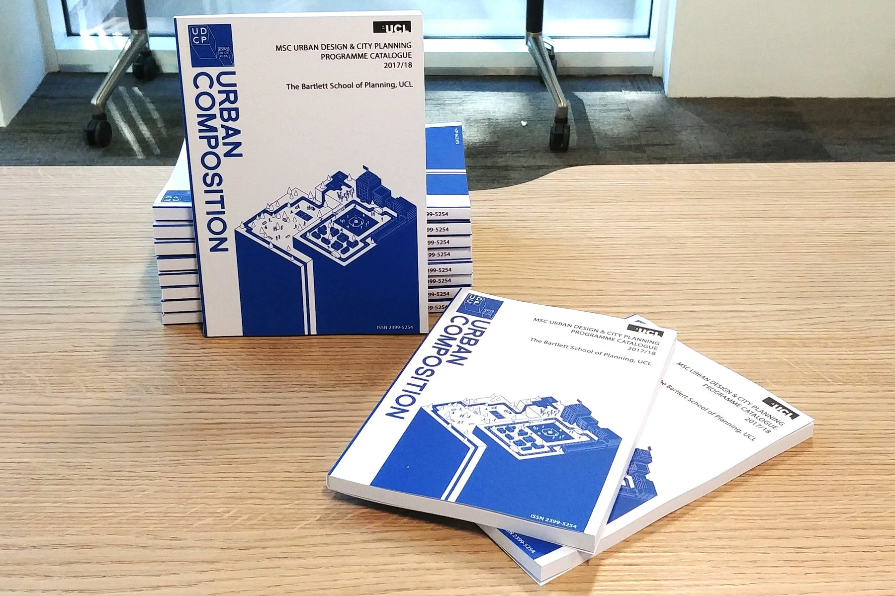
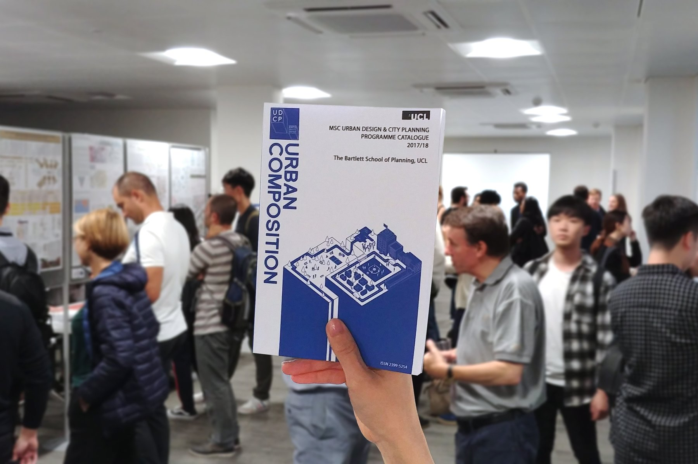

URBAN COMPOSITION
UNIVERSITY COLLEGE LONDON


URBAN COMPOSITION is a graphic design project done in collaboration with a friend of mine who studied at UCL for their end-of-year expo, showcasing the work produced by the 2017/2018 MSc Urban Design and City Planning students.
Core design concept
Each element below, a building block of a city, is derived from themes common throughout students’ projects and dissertations, such as the street, social inclusion in the city, green spaces, the neighbourhood.

Piece by piece, through complementary and dichotomising findings, a collective knowledge on many different components of the city has been produced: an urban composition.



